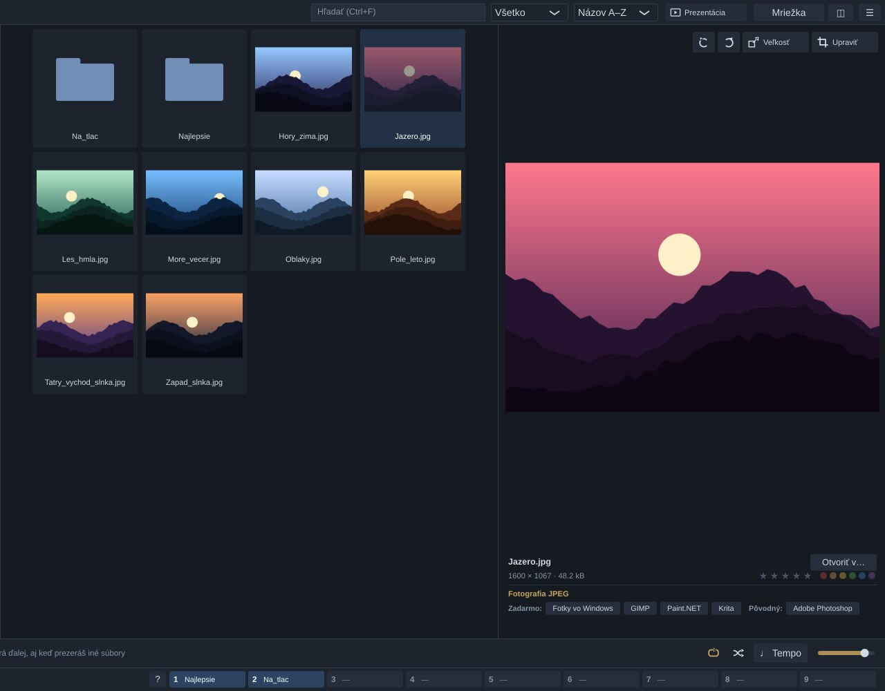
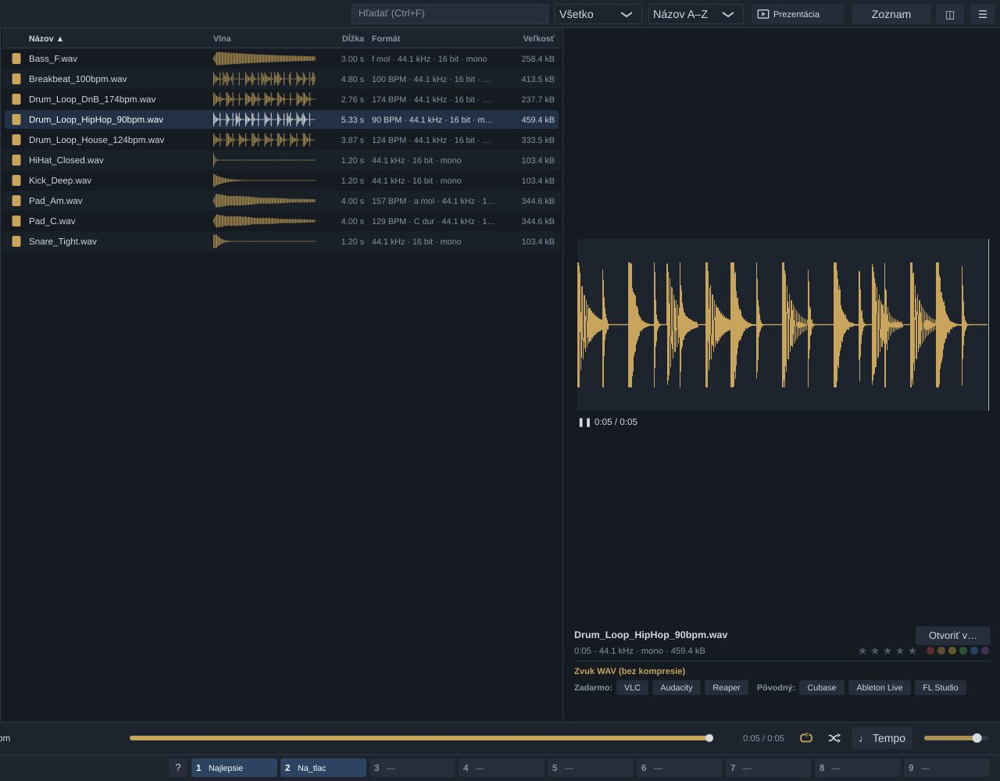
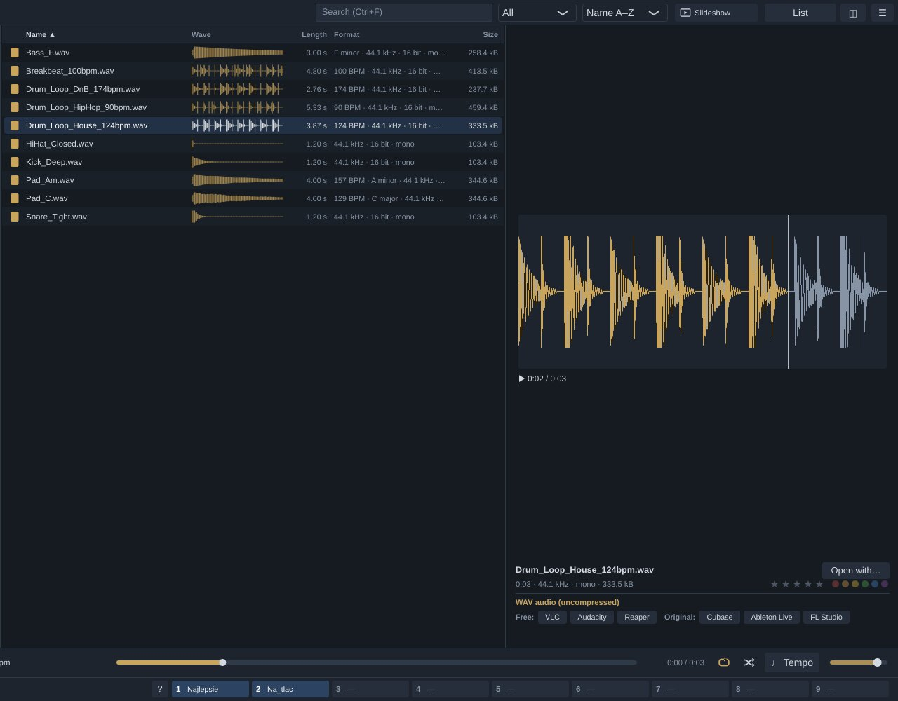
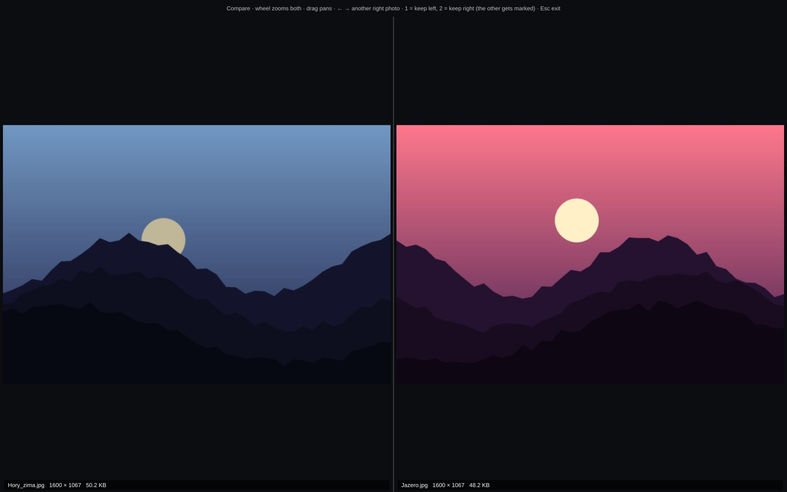

Fotky, hudba, samply, filmy, PDF aj 3D modely – v jednom okne so stromom priečinkov. Žiadne čakanie ako pri Fotkách vo Windows, žiadne prepínanie medzi piatimi programami.Photos, music, samples, films, PDFs and 3D models – in one window with a folder tree. No waiting like in Windows Photos, no switching between five programs.
Stiahnuť zadarmo pre WindowsFree download for Windows

Vznikol, lebo na Windows chýbal jeden jednoduchý prehliadač, ktorý zvládne obrázky, zvuk aj video naraz a dá sa v ňom aj upratovať.Made because Windows lacked one simple viewer that handles images, sound and video at once – and lets you tidy up too.
JPG, PNG, HEIC, RAW, WebP, SVG, EPS… Náhľady sa načítajú hneď, listuješ šípkami aj na celej obrazovke, s prezentáciou a hudbou.JPG, PNG, HEIC, RAW, WebP, SVG, EPS… Thumbnails load right away, browse with arrow keys even full screen, with a slideshow and music.
MP3, WAV, FLAC, AIFF, OGG, M4A, aj REX loopy a MIDI. Zoznam s vlnou, BPM a tóninou – ideálne na prehľadávanie samplov.MP3, WAV, FLAC, AIFF, OGG, M4A, even REX loops and MIDI. A list with waveform, BPM and key – ideal for browsing samples.
MKV, MP4, AVI, MOV, M2TS aj 4K. Titulky a zvukové stopy, pokračovanie tam, kde si skončil, uloženie snímky z videa.MKV, MP4, AVI, MOV, M2TS and 4K. Subtitles and audio tracks, resume where you left off, save a still frame.
PDF, texty, tabuľky, Word, Excel, PowerPoint a fonty si pozrieš bez otvárania ďalších programov.View PDF, text, spreadsheets, Word, Excel, PowerPoint and fonts without opening other programs.
STL a 3MF pre 3D tlač, OBJ, výkresy DXF (a náhľad DWG) – otočíš, priblížiš, pozrieš z každej strany.STL and 3MF for 3D printing, OBJ, DXF drawings (plus DWG preview) – rotate, zoom and look from every side.
Nastav si cieľové priečinky a súbory triediš jedným klávesom. Pomýlil si sa? Ctrl+Z.Set target folders and sort files with a single key. Made a mistake? Ctrl+Z.
Ako v Total Commanderi: F5 kopíruje, F6 presúva, s priebehom aj pri veľkých súboroch.Like Total Commander: F5 copies, F6 moves, with progress even for large files.
Otočenie bez straty kvality, orezanie, jas, kontrast, hromadné zmenšenie, porovnanie dvoch fotiek vedľa seba.Lossless rotation, crop, brightness, contrast, batch resize, compare two photos side by side.
Hviezdičky a farebné štítky, triedenie podľa dátumu fotenia, hľadanie duplikátov, hromadné premenovanie.Stars and colour labels, sorting by date taken, duplicate finder, batch rename.
WAV → MP3/FLAC, HEIC → JPG a ďalšie – hromadne, originály ostanú.WAV → MP3/FLAC, HEIC → JPG and more – in batches, originals stay untouched.
Pri každom súbore vidíš, čo je to za formát a ktorými programami (aj zadarmo) sa dá upraviť.For every file you see what the format is and which programs (free ones too) can edit it.
Tlač cez Windows (Ctrl+P) a export zoznamu skladieb so BPM a tóninou do Excelu.Print via Windows (Ctrl+P) and export a track list with BPM and key to Excel.
Prechádzaj samply ako v DAW prehliadači – bez otvárania projektu.Browse samples like in a DAW browser – without opening a project.



Inštalácia trvá pár sekúnd a nepýta administrátora.Installation takes seconds and needs no admin rights.
Vľavo v strome klikni na priečinok – všetko sa hneď ukáže.Click a folder in the tree on the left – everything shows up at once.
Šípky listujú, Enter otvorí na celú obrazovku, 1–9 presúva do cieľových priečinkov.Arrows browse, Enter opens full screen, 1–9 move to target folders.
Áno. Bez reklám, bez registrácie, bez obmedzení.Yes. No ads, no sign-up, no limits.
Nie. Inštaluje sa len pre teba a aktualizuje sa sám.No. It installs just for you and updates itself.
V programe klikni na ☰ vpravo hore a zapni túto voľbu. Potom stačí pravý klik na priečinok alebo súbor.Click ☰ at the top right and turn the option on. Then just right-click a folder or file.
Nie, kým to sám nechceš – otočenie, úpravy či presun robí len na tvoj pokyn a presun vrátiš cez Ctrl+Z. Hodnotenia a štítky sa ukladajú bokom, nie do súborov.Not unless you ask – rotating, editing or moving only happens on your command and moves can be undone with Ctrl+Z. Ratings and labels are stored separately, not in your files.
Áno, stiahni si samostatný súbor Korgus Player.exe. Na videá treba ešte knižnicu, ktorú si program stiahne cez ☰.Yes, download the standalone Korgus Player.exe. Videos need an extra library that the program downloads via ☰.
Zadarmo pre Windows 10 a 11.Free for Windows 10 and 11.
Stiahnuť zadarmoFree downloadKompletný návod na použitieComplete user guide
Od rovnakého autora:By the same author: Korgus Sequencer